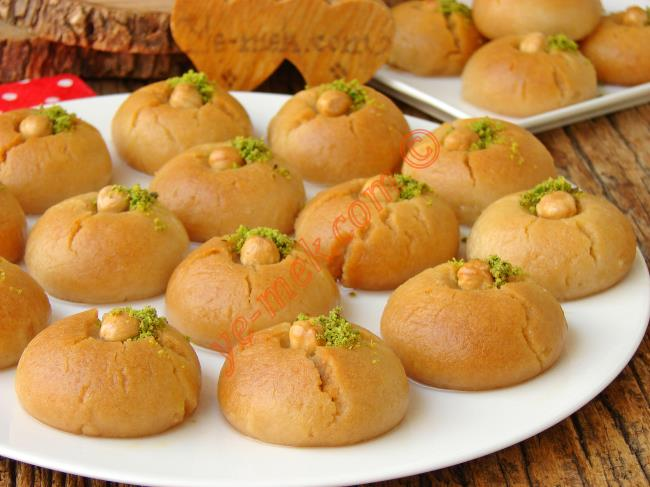

ŞEKERPARE TARİFİ

MALZEMELER
- 125g margarin
- Yarım su bardağı pudra şekeri
- 3 çorba kaşığı silme irmik
- 1 adet yumurta
- 1,5-2 su bardağı un
- 1 paket vanilya
- 1 çay kaşığı silme kabartma tozu
- 1 çay bardağı fındık
- 2 su bardağı şeker
- 3 su bardağı su
- 4-5 damla limon suyu
HAZIRLANIŞI
- Karıştırma kabına yağ ve pudra şekerini alıp karıştıralım.Yumurtayı da ileve edip karıştırmaya devam edelim.
- İrmik, kabartma tozu, vanilya ve unu az az ilave ederek yumuşak bir hamur elde edelim.
- Hamurdan ceviz büyüklüğünde parçalar kopartıp elimizde yuvarlayalım ve ortasına bir adet fındık koyalım.
- 180 derece önceden ısıtılmış fırında hafif kızarıncaya kadar pişirelim.
- Şerbet için tencereye suyu ve şekeri koyup yaklaşık 10-15 dk arası pişirelim.
- İndirmeye yakın limon suyunu ekliyoruz 2-3 dk daha pişiriyoruz.
- Pişen şekerpareleri fırından alıp 2 dk bekletelim ve ılık şerbeti üzerine dökelim
- AFİYET OLSUN...